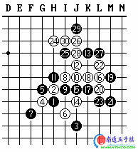
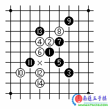
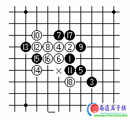
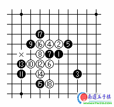

游星为什么必输
#1 游星为什么必输 作者：有志青年 发表时间：2007-2-23 12:00:16
游星是必输的，这几乎所有下五子棋的朋友都知道。因为是必输局，所以没有人去走它，更没有人去琢磨它。
突然有一天，我看见了一个根本不懂棋的棋手，和一个学过定式，多少知道点棋的朋友在下，居然就开出了游星，最后的结果是，根本不懂棋的确赢了懂棋的（这种情况只出现在一般的初学者身上，对棋力深厚的棋手其实是不可能出现的，因为他们评介判断也能走出好手来）。
我不禁哑然失笑。
怎么必输局走成了必赢局呢，笑话，是不是这个开局定义为必输就是错误的？
其实不是，只是因为他是必输，所以没有人去琢磨必输的原因而已，于是你对它就非常陌生，对一个非常陌生的棋你又如何走的好呢？
游星局(Direct 13)为直止打法的第十三局。此局为持黑必败局，因此，在段位以上的职业选手对局中均不采用此局。但是，在级位选手的练习对局中常常可用此局交锋，借以提高持白方的攻杀能力。

上图：白4防守于G8点。由于不是最强防点，所以其演变稍微要复杂一些。黑5斜跳三；白6中间阻断。黑7防守；白8成一个斜行眠三和一个大跳二。黑9防守，同时斜二；白10做棋。黑11防守；白12斜冲四。白14跳三。黑15中间防守；白16斜跳三。黑17中间防守；白18冲四。白20斜活三。黑21防守；白22活三。黑23防守；白24斜跳冲四，好棋！白26成一个眠跳三，准备抓对方的禁手。黑27跳三；白28冲四。白30成双三。白方胜定

上图：白4应在G9点，白4为最强防守点。黑5选择G9点，黑5成一个斜行眠三；白6成角。请注意，这是游星局的定式！此形为持黑必败。黑7成双二，同时阻挡对方一个连二，似乎不错；白8斜活三，先手。黑9防守；白10斜跳冲四。迫使黑11应于F7点。白12跳三。黑13想逃；白14跳冲四，迫使黑方于x点(G7)形成“三、三”禁手。白方胜定。
黑7如果变着，守于G7点；白8只要于F7点活三，再于F9点活三，同样要追下取胜。

上图：黑7变着，防守于G10点；白8活三。黑9防守；白10斜活三。黑11防守。白12冲四。白14跳三。黑15中间阻断；白16斜活三。黑17防守；白18斜跳三。此后，将迫使黑方于x点(G7)形成“三、三”禁手。白方胜定。黑9如果变着，防守于E9点，白方将如何取胜？

上图：黑5防守于I9点；白6于G7点跳二，同时阻挡对方的斜二。黑7连二，冲断对方的跳二；白8斜成双二，同时挡住对方的连二。黑9为最强防守；白10斜活三。黑11防守。白12活三。黑13防守；白14再活三。黑15防守；白16冲四；白18斜活三，先手，必将迫使黑方于x点(D8)形成“三、三”禁手。白方胜定。
黑15若反向防守，白于G5点活三后，再于F4、I7两点连冲四叫杀。
所以我们说游星必输。
#2 Re:游星为什么必输 作者：濛濛的雨季 发表时间：2007-3-18 22:28:35
没有走过游星#3 Re:游星为什么必输 作者：行云流水 发表时间：2007-3-27 13:00:48
游星一打的白必胜理论谱还没有见到。因此，只能说在两打情况下，游星黑必败。#4 Re:游星为什么必输 作者：天师 发表时间：2007-6-17 3:27:28
2打好象也有强防#5 Re:游星为什么必输 作者：黄药师 发表时间：2007-7-4 12:41:52
所谓必胜，必败还要看什么人下吧！就像灭绝师太拿了倚天剑，照样打不过张无忌！#6 Re:游星为什么必输 作者：吕文鹏 发表时间：2008-7-12 0:14:58
赞同2楼的说法，通过下了多年的游星得出的结论，一打黑未必输，仅代表个人看法，输了也是棋力的问题，个人棋力有限，基本是黑石加自己选的点，一直找不出白能杀黑的杀点，黑7有强点，白8可选的强点也不多，另白4的斜防就是图二白死在6手的位置也是很强的点，望高手能给一个好的结论，请有志老大能把我的威望提高一下，有机会能交流心得#7 Re:游星为什么必输 作者：古卧猫王 发表时间：2008-8-7 0:33:14
今天在QQ上下无禁的就遇到这样开局的,下了几把都输了....
#8 Re:游星为什么必输 作者：风情 发表时间：2008-8-9 0:22:59
想想是不是把游一打地毯公开,等我心情好的那天吧..
#9 Re:游星为什么必输 作者：gerbo 发表时间：2008-8-9 2:27:22
 楼上的心情难道不好吗？今天全国都在欢庆，大家举杯同乐~
楼上的心情难道不好吗？今天全国都在欢庆，大家举杯同乐~ 本以为我错过奥运点火仪式了，（白天上班太累，回家就睡到9点多...汗~）结果差不多都23点才点火开始，哈哈，发了吧，大家一起学习~这个月估计没有几天可以好好休息下了~
本以为我错过奥运点火仪式了，（白天上班太累，回家就睡到9点多...汗~）结果差不多都23点才点火开始，哈哈，发了吧，大家一起学习~这个月估计没有几天可以好好休息下了~
#10 Re:游星为什么必输 作者：疏星终结 发表时间：2008-8-9 7:21:20
忽传来游一打白必胜
又闻有人要一打地毯 不是我不明白，这世界变化快
不是我不明白，这世界变化快
#11 Re:游星为什么必输 作者：歇斯底里 发表时间：2008-8-10 14:15:46
真厉害啊，各位楼上的#12 Re:游星为什么必输 作者：笑雨辰 发表时间：2008-8-19 5:10:30
什么时候出地毯？#13 Re:游星为什么必输 作者：游戏王 发表时间：2008-9-1 23:26:02
玩过5子棋的都知道 游星平衡#14 Re:游星为什么必输 作者：wrwak 发表时间：2008-11-12 18:46:52
玩过五子棋的都知道 火星必胜#15 Re:游星为什么必输 作者：威龙 发表时间：2008-12-28 15:16:53
 游星 白必胜么?上面图中 黑5 跟黑7 有点问题吧,很明显找抓,至于第1个图,俺回去拆下,好象有点意思啊!!!嘎嘎......
游星 白必胜么?上面图中 黑5 跟黑7 有点问题吧,很明显找抓,至于第1个图,俺回去拆下,好象有点意思啊!!!嘎嘎......
#16 Re:游星为什么必输 作者：郝毅 发表时间：2009-2-4 21:52:01
万恶的必败啊
#17 Re:游星为什么必输 作者：孤影锁寒楼 发表时间：2009-3-5 17:10:25
楼上的真厉害啊，各位楼上的